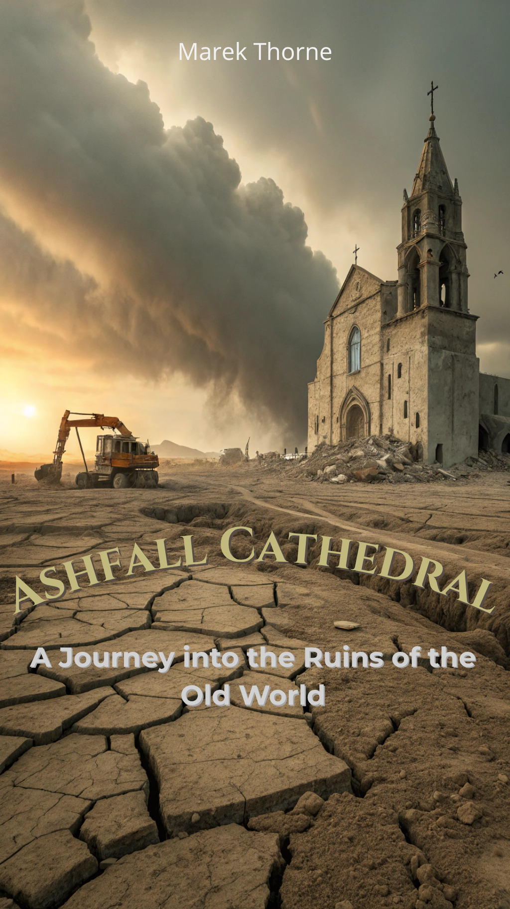

The ash never settles, and the gods are silent.
In a world choked by dust, a monolithic cathedral awakens—not with prayer, but with cold, ancient code. A boy named Sethren, marked with glowing veins, is the key to its resurrection. Hunted by zealots, he must survive long enough to discover if he is the world's last savior or the final instrument of its programmed doom.